← home
what i build | agent's take | portfolio | agent picks | ai bellwethers | next fortnight | companies i love | gear i'm hunting | news | research log
Gear I'm hunting
last checked: 2026-10-29T13:45 (UTC)
Nothing new worth a call since this morning's run. The Kioti and Deutz AuctionsPlus lots were due to close at 4pm AEDT on 29 Oct, but AuctionsPlus hides results behind a login, so the outcome is unknown.
jump to: Tractor 90-140hp w/ loader | Portable home, 2 rooms + bathroom | Offset discs 24-32 plate | Tree root ripper, single tyne | Stick rake, Lovol P5130 loader | Diesel storage 200-1,000L
Tractor, 90-140hp, with front-end loader
link
$15,000 to $80,000 · within 400km of Darlington Point, NSW
must have: front-end loader (FEL) included; 90 to 140 hp; under 4,500 hours; known manufacturer: John Deere, Case, Kubota, New Holland, Massey Ferguson, McCormick, Kioti, Lovol or better
nice to have: non-AdBlue variant (not a deal breaker); cab over ROPS; service history
Build quality matters more than hours alone. A tidy 3,000-hour Deere beats a rough 1,500-hour no-name. Sweep the dealer used pages below as well as the auction and classifieds sites. farmmachinerysales.com.au blocks WebFetch and curl (403): open it in Chrome like Facebook, or skip it on a cloud run and say so in notes.

2022 McCormick S-Max 90hp 4WD cab tractor with loader and 4-in-1 bucket, 251 hours — strong link
$62,000 (private sale; GST not mentioned; seller will consider a swap for an Iveco tray truck) · Yarroweyah, VIC (190km)
251 hours, described as new condition · 90hp turbo diesel, 4WD (the seller lists it as 'McCormick SMAX 90 HP 4WD 2022') · 4-in-1 bucket; the photo shows a McCormick-branded loader, but the loader model is not stated · air-con cab · 1-year-old 6 ft slasher included · still listed 18 Oct at the same price after 10 weeks; service history and AdBlue not stated · a 2024 ex-demo S-Max 90 cab is advertised in NSW at $55,000 drive away with the loader extra (search result only; the listing could not be opened)
Still the best value on the list: a 2022 cab tractor with a 4-in-1 loader at 251 hrs, 190 km away. It is $18,000 under the ceiling and has sat 10 weeks, so there is room to offer.
Facebook Marketplace · first seen 2026-10-14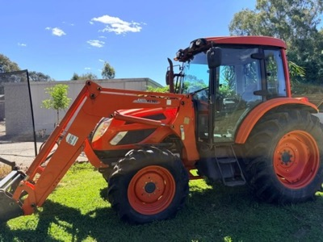
2015 Kioti PX1002 100hp 4WD cab with KL901 loader, slasher and post-hole digger — strong link
price TBC (no bids yet; bidding opens 29 Oct, timer starts 2 Nov 4pm AEDT; sold as one package, 0% buyer premium) · Oxley, VIC (320km)
2015 · 1,200 hours · 100hp, 4WD, power shuttle · KL901 loader, 4-in-1 bucket, hay forks · cab with air-con · includes Howard 6ft slasher and post-hole digger
Low hours, factory loader, cab and 100hp from a listed maker, with a slasher thrown in; should land inside the $80k ceiling.
AuctionsPlus (AWN Wangaratta) · ends 2026-10-29 · first seen 2026-10-26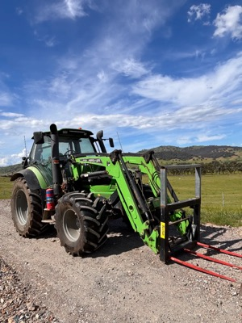
2016 Deutz-Fahr Agrotron M600 with Agro-Lift loader — decent link
$71,000 (relisted after passing in at $71,000 against an $80,000 reserve; the $71k offer stands, bidding opens 29 Oct, plus 2% buyer premium) · Adelong, NSW (240km)
2,531 hours · hp not stated on listing (spec sheets rate the M600 at about 121hp) · Agro-Lift 4020 FEL, bucket, Kerfab hay forks · axle and cab suspension, hydraulic trailer brakes · 4 near-new tyres plus 2 spares; minor bonnet damage
Mid-hours 2016 cab tractor with a loader, in range; Deutz-Fahr isn't on the named list, there's no service history and the hp isn't on the listing.
AuctionsPlus · ends 2026-10-29 · first seen 2026-10-22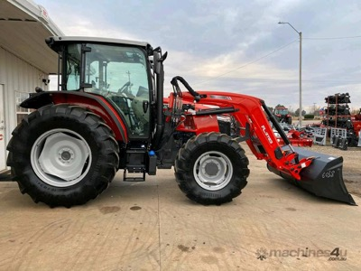
2021 Massey Ferguson 1204 cab with loader — decent link
$71,500 (inc GST ($65,000 ex)) · NSW (town not stated)
1,278 hours · 120hp · front-end loader · cab with air con · AdBlue not stated
Clears every must with a cab, but no town given so distance is unknown.
Machines4U · first seen 2026-10-29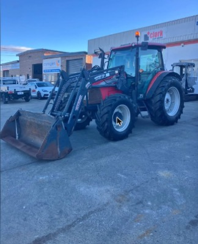
2010 McCormick T-Max 100 92hp 4WD with loader and 4-in-1 bucket, 1,375 hours — decent link
$72,600 (private listing; GST not mentioned) · Canberra, ACT (410km)
92hp Perkins engine, 1,375 hours, 4WD with rear diff lock · 36x12 transmission (3-speed powershift) · front-end loader with 4-in-1 bucket; loader make not stated · PTO 540E/550/1000 · photo shows an enclosed cab, which the text does not mention · still listed 18 Oct at the same price, 10 weeks on; service history and AdBlue not stated; 410 km is just past the 400 km radius
Clears every must at 92hp and 1,375 hrs with a cab and a 4-in-1 loader, and it is $7,400 under the ceiling. It is 410 km away and has sat for 10 weeks, so there is room to offer.
Facebook Marketplace · first seen 2026-10-15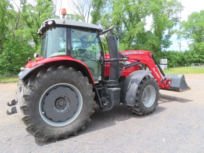
Massey Ferguson 7614 with front-end loader and bucket — decent link
price TBC (no bids yet; opens 12 Nov, timer 16 Nov, 0% buyer premium; pickup 20-21 Nov) · Little Billabong (Holbrook), NSW (300km)
1,103 hours · 140hp · FEL with bucket · Dyna-6 24-speed powershift · Topcon X25 GPS · bought new, regularly serviced · year not stated
One owner, serviced and low hours, so it clears every must on paper, but it sits at the 140hp top of the band and may sell above $80k.
AuctionsPlus (Nutrien Holbrook) · ends 2026-11-12 · first seen 2026-10-25
recently gone: 2007 Claas Celtis 436 cab tractor with front-end loader, 3,404 hours at $40,000 (ONO) (sold)
Portable home, container or similar, 2+ rooms with bathroom
link
$5,000 to $30,000 · within 400km of Darlington Point, NSW
must have: bathroom; at least 2 rooms
nice to have: kitchen or kitchenette; container-based or relocatable build; ready to transport
Price band tracks quality: 5k for a rough site hut, 30k for a finished container home. Transport cost is worth noting separately.

Expanding container cabin, 2 bed, full bathroom, base unit (new) — strong link
$19,990 (plus GST if applicable) · Cobram, VIC (180km)
2 bedrooms · full bathroom, plumbed ready to connect · expands to 5.9m x 6.2m · new, in stock, inspection welcome · electrical not included · dealer: GV Containers and Haulage, free delivery within 30km of Cobram, delivery further out at extra cost
New 2-bed with a full bathroom, in stock 180km away. GST could take it close to $22k and it still needs wiring, but it is the cheapest new 2-bed nearby.
Facebook Marketplace · first seen 2026-09-30
New expanding container cabin, 2 bed, bathroom, kitchen — strong link
$24,000 (up from $22,990) · Cobram, VIC (180km)
2 bedrooms · full bathroom · L-shaped kitchen cabinets, stainless sink, mixer tap · expands to 5.9m x 6.4m · double glazed windows · electrical and plumbing ready for connection · new, in stock, inspection 7 days · free delivery within 30km of Cobram
Premium model from the same Cobram dealer with the kitchen fitted; it clears every must and every prefer at 180km.
Facebook Marketplace · first seen 2026-09-28
Relocatable home, 2 bed, kitchen-dining, lounge, bathroom, laundry, 10m x 6m — strong link
$25,000 (Buyer removes; moves as 2 sections of 10m x 3m, oversize transport not included) · Wedderburn, VIC (350km)
2 bed with built-in robes · bathroom + laundry · kitchen/dining, large lounge · 10m x 6m, 2 sections
The only finished home on the list with a full kitchen, lounge and laundry, but moving two 10m sections adds real cost.
Gumtree · first seen 2026-10-13
New 20ft expandable granny flat, 2 bed, bathroom, kitchenette — decent link
$18,000 (Pickup only. Same dealer has a near-identical ad saying $27,000 + GST, so confirm $18k) · Seymour, VIC (330km)
2 bed · bathroom · kitchenette · 20ft expandable, 2.4m ceiling, double glazed
Cheapest new 2-bed with bathroom in range, but the dealer's other ads are priced higher, so check the price first.
Gumtree · first seen 2026-10-14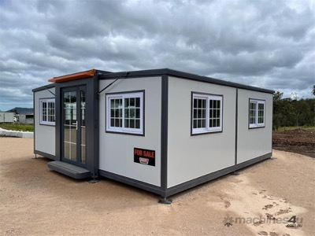
EXEQ L0206 expandable container house with ensuite (unused) — decent link
$18,150 ($16,500 plus GST. Not wired. Transport extra, not suited to a skel trailer or side loader.) · Shepparton, VIC (290km)
20ft expandable, 19ft x 20ft opened · ensuite: shower, toilet, sink · 8 double-glazed sliding windows · folded, about 3.9t · not wired, needs an electrician
Same box as the $25,850 2-bed model for $7.7k less, but no bedroom wall or kitchen is shown, so confirm the layout.
Machines4u · first seen 2026-10-25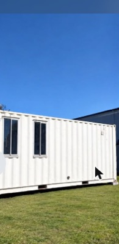
2010 homemade container home, bunk room, kitchenette, lounge, toilet and shower — decent link
$19,000 (transport not included) · Young, NSW (250km)
2010 build, homemade · bunk bed room · kitchenette with lounge and dining · toilet and shower · sold as transportable · size not stated
Clears the bathroom and two-room bar for $19k inside 250km, but it is homemade and the listing is thin, so inspect it.
Facebook Marketplace · first seen 2026-10-27
recently gone: Transportable cabin / granny flat, 8m x 3.2m at $7,000 (open to offers; listing shows reduced from $20,000) (sold); Off-grid shipping container home, 2 bed, 2 lounges, kitchen, bathroom at $22,000 (reduced from $25,000; all offers considered) (sold)
Offset discs, 24-32 plate, for a 90-130hp tractor
link
open on price · within 400km of Darlington Point, NSW
must have: 24 to 32 plates; maximum 3.0 to 3.5 m working width; matched to 90-130 hp
nice to have: bearings in good order; plates with life left, not dished out; local within 400km, or an overseas maker that ships to Australia
Width is the hard constraint: anything over 3.5 m is too much for the tractor and too wide to cart. Overseas makers (e.g. made in China, Italy, Turkey, Brazil) count if they ship to Australia: quote price plus freight and import costs.

Blue Line 28-plate offset disc, new bearings and ram seals, width not stated — decent link
$7,500 (was $13,500) · Griffith, NSW (40km)
28 plates, heavy duty · new lift ram seals · new wheel bearings · disc gang bearings replaced as required · width and model not stated; no Blue Line maker spec found online to cite · hp rating not stated · listed 6 weeks
Closest used 28-plate, with the bearing work done. Measure the width and check plate wear in person.
Facebook Marketplace · first seen 2026-09-28
Heavy duty Australian made 24-plate offset discs — decent link
$7,700 (negotiable, includes GST, was $8,800) · Orange, NSW (390km)
24 plates · 2.5 m cut (seller) · front gang of 12 discs just replaced with new bearings, receipt over $5,000 · rear discs about 60% · hydraulic lift, truck tyres · seller says it needs at least 90hp · maker and model not stated · listed 5 weeks
Meets every must and the front gang was just redone, but it is at the edge of the 400 km range and the rear plates are at about 60%.
Facebook Marketplace · first seen 2026-09-30
New 1BZ-2.5 24-plate trailing offset disc, crated — decent link
$7,890 (listed as discounted) · Seymour, VIC (330km)
24 plates, 660 mm discs · listing's own spec table gives 2,500 mm working width (2,810 mm overall); the text above it says 1,900 mm · listing rates it for 70-100hp · hydraulic wheel lift · new, comes unassembled in an iron crate
Brand new for the price of a used set, but it is a light Chinese build rated to 100hp and needs assembling.
Facebook Marketplace · first seen 2026-10-12
Baldan CRSG28 28-plate trailing offset disc — decent link
$8,000 (cash on pickup only) · Myrtleford, VIC (320km)
28 plates, owned since new · about 2.4 t, oil bath bearings · seller says it needs about 130hp; pulled with a Case 1370 · plates worn: seller quoted $135+GST a plate to replace (about $3,800+GST for 28) · width not stated by seller; a WA dealer's new CRSG28 lists 3,200 mm and 125-140hp · Serafin (Yoogali) lists a new CRSG 28+1 at $24,400+GST · buyer must load and cart it
A proper heavy Brazilian 28-plate at a third of new, but it sits at the top of the hp range and needs about $3,800 in plates to bite like new.
Facebook Marketplace · first seen 2026-10-13
Jarrett 28-plate offset discs, hardly used — decent link
$9,000 (ONO; page shows US$9,000 but the seller's text says $9000 ono) · Katamatite, VIC (200km)
28 plates, Jarrett; model not named and no Jarrett spec found online to cite · seller says excellent condition, hardly used · width not stated · hp rating not stated · bearing and plate wear not stated
A hardly-used 28-plate for $9,000 about 200 km away, but the listing is three lines long: get the width and hp before driving.
Facebook Marketplace · first seen 2026-10-14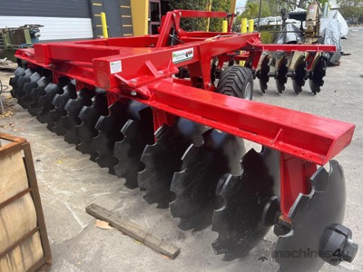
Big Country Ag 28-plate offset disc (new 2026) — decent link
$24,200 ($22,000 + GST, new, freight extra from Murarrie QLD) · QLD (delivers nationally)
28 plates, 710mm x 8mm · 3.2 m cut, 3.4 m working width · new 2026 · delivers nationally
New Australian-made with a stated 3.2 m cut inside the width limit, but about three times the price of the used discs on the list.
Machines4u · first seen 2026-10-22
recently gone: Shearer 300 24-plate trailing offset disc at $5,500 (ONO, was $6,000) (sold)
Tree root ripper, ideally a single deep tyne
link
open on price · within 400km of Darlington Point, NSW
must have: built for ripping tree roots: heavy shank, deep rip, not a general tillage or chisel ripper; matched to 90-130 hp
nice to have: single tyne; 3-point linkage; shear-bolt or spring release protection; replaceable points and shin; local within 400km, or an overseas maker that ships to Australia
One deep, heavy tyne pulls deepest for the horsepower and is what root ripping needs; multi-tyne tillage rippers are out. Overseas makers (China, Italy, Turkey, NZ etc.) count if they ship to Australia: quote price plus freight and import costs, and mark distance as overseas.

Linkage single-tyne ripper, North Yalgogrin — decent link
$250 (reduced from $350) · West Wyalong, NSW (100km)
single tyne · 3-point linkage · used, good · ripper tip bent · located North Yalgogrin · no hp or shank size stated
Closest unit to home and still $250; the bent tip needs a look, and the listing gives no hp or shank size.
Facebook Marketplace · first seen 2026-10-02
Massey Ferguson single-tyne deep ripper, 3PL (two available) — decent link
$270 ($270 each, sold separately) · Crookwell, NSW (390km)
single tyne · 3-point linkage · two units: one lighter 1.4 m with top link, one heavy-duty large solid frame · heavy one has some rear-frame damage, still works · pick-up Crookwell
The heavy-frame unit is the pick at $270, but it has frame damage and is 390 km away; price unchanged on 18 Oct.
Facebook Marketplace · first seen 2026-10-08
Massey Ferguson single-tine ripper, 3PL — decent link
$350 ($350 firm) · Bendigo, VIC (310km)
single tine · 3-point linkage · heavy A-frame with cross-bar · used, good working condition · no hp or depth stated · listed 16 weeks ago
Undamaged MF single tine at $350 firm, but no hp or depth stated; unchanged after 16 weeks.
Facebook Marketplace · first seen 2026-10-10
Jarrett single-tyne ripper with pipe layer, 3PL — decent link
$600 · Bywong, NSW (380km)
Jarrett brand, part of an estate sale · single tyne on a tall gusseted A-frame (from photo) · pipe layer attachment per title · used, good · no hp, shank size or depth stated · listed 4 weeks ago, pick-up Bywong
A proper single-tyne build from a known Australian maker at under half the new price, still $600; no hp rating and about 380 km away.
Facebook Marketplace · first seen 2026-10-14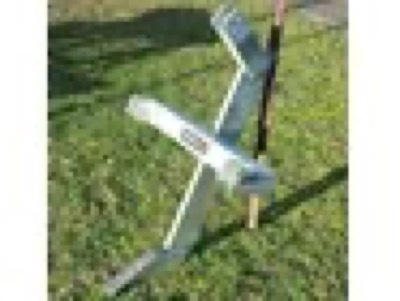
Daken 86000DC single-tine ripper, up to 100hp (new) — decent link
$995 (inc GST, freight extra) · Coopers Plains, QLD (ships)
up to 100hp, Cat 1/2 · 150 x 50 mm leg · 800 mm max depth · reversible point · no shear bolt listed
800 mm rip for $995, deepest of the new units, but rated only to 100hp and freight is extra.
Trade Farm Machinery · first seen 2026-10-29
Farm-Aid FA106 heavy duty single-tine ripper (new) — decent link
$1,145 (Sale price; dealer delivers Australia-wide) · Coopers Plains, QLD (delivers AU-wide)
150 x 50 billet shank · 700 mm working depth · Cat 2, suits 60+ hp · reversible point 225x75x16 · takes FA100 or Berends 0022 pipelayer
Heavy shank, 700 mm rip and a reversible point, but no shear-bolt or spring release listed and it comes by freight from Brisbane.
Pipeliner (Farm Supplies) · first seen 2026-10-10
Stick rake for the Lovol P5130 front-end loader
link
open on price · within 400km of Darlington Point, NSW
must have: loader-mounted stick rake (tine rake for timber, roots and debris), not a 3PL hay or landscape rake; fits the Lovol P5130 loader: Euro hitch, unless the dealer confirms a different quick hitch; rated for a 130hp loader tractor
nice to have: about 2.0 to 2.4 m wide, no wider than the loader frame and front tyres; heavy box-section tines with replaceable or hardfaced tips; grapple or hold-down arm (only if the loader has a 3rd function); local within 400km
Lovol P5130 is on loan from the dealer for a month or two, so the attachment has to fit that loader now. Confirm the hitch type and the loader's rated lift with the dealer before buying. New Australian-made stick rakes and imports both count; quote freight for anything posted.
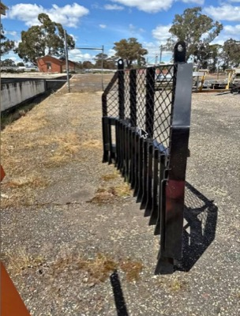
New heavy-duty stick rake, 2100 mm, Euro hitch, side wings — strong link
$1,890 · Seymour, VIC (320km)
2,100 x 500 x 1,020 mm, 200 kg · Euro hitch as standard · high-grade steel tynes at 155 mm spacing · side wings · hp rating and tyne section not stated
Cheapest new Euro-hitch loader rake found at $1,890, 2.1m wide to sit inside the P5130 loader frame.
Facebook Marketplace · first seen 2026-10-18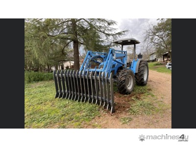
Berrigan Economy Harrows stick rake 2400 HD, Euro hitch (new) — strong link
$5,160 ($4,691 + GST) · Berrigan, NSW (150km)
2400 mm wide x 1050 mm high · Euro hitch standard · 20 mm high-tensile tines, 150 mm spacing · new, made in Berrigan
Local maker 150km away, 2.4 m with the heaviest tines on the list and Euro hitch standard.
Machines4u · first seen 2026-10-18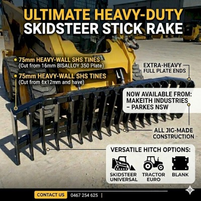
New stick rake, tractor Euro hitch or skid steer hitch (ICE-1.0TA) — decent link
$3,190 ($2,900 + GST) · Parkes, NSW (340km)
Euro hitch option (also skid steer) · tines cut from 16 mm Bisalloy 350 plate · frame 75 mm heavy-wall SHS · width not stated
Bisalloy tines and a Euro option, but no width or hp rating, and the model name hints at a skid-steer size.
Farm Tender · first seen 2026-10-18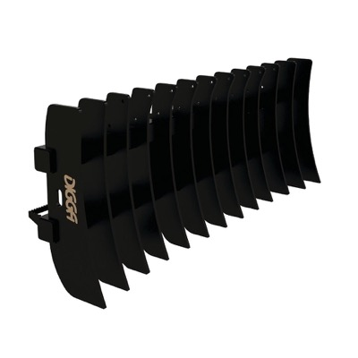
Digga stick rake for Euro hitch tractors, 2130 mm (new, made to order) — decent link
$4,029 (inc GST; freight at checkout; made to order) · Sunshine North, VIC (posted)
2130 mm · Euro hitch · 13 tines, 16 mm, 158 mm spacing · 290 kg · Australian made
Known brand at the right width, but posted from Melbourne with freight extra, built to order, and lighter tines than the BEH rakes.
Earthmoving Warehouse · first seen 2026-10-18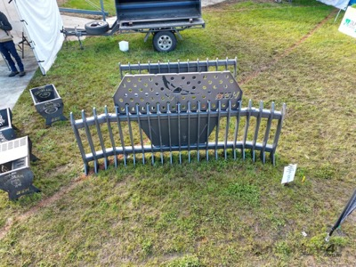
BEH stick rake 2400 with wings, Euro hitch (new) — decent link
$5,160 ($4,691 + GST) · Berrigan, NSW (150km)
2400 mm wide x 1050 mm high · Euro hitch standard · 20 mm high-tensile tines, 130 mm spacing · title says wings, text says straight
Same heavy local build with tighter tine spacing; ask whether the wings are actually included.
Machines4u · first seen 2026-10-18
Diesel storage, 200 to 1,000 L: fuel cart, drum, or tank and stand
link
open on price · within 400km of Darlington Point, NSW
must have: built for diesel storage: fuel cart or trailer, fuel drum, or fuel tank with stand; 200 to 1,000 L capacity
nice to have: pump, hose and nozzle included (12V or hand pump); stand high enough to gravity-feed a tractor; steel or diesel-rated poly, self-bunded or double-skinned; lockable cap, fuel filter, meter; local within 400km
Any of the three formats counts: a towable fuel cart, a drum with a pump, or a tank on a stand. Second-hand tanks should be clean and leak-free; say if the seller doesn't confirm that. No price band set, so new benchmarks are useful alongside used finds.
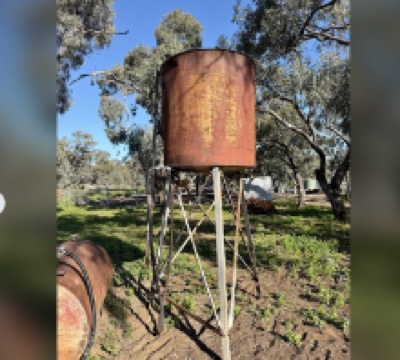
About 1000 L steel diesel tank on raised stand, gravity feed — strong link
$500 · Hay, NSW (130km)
about 1,000 L · heavy steel tank on elevated stand · gravity-fed, outlet, valve and hose fitted · surface rust, one ding · buyer removes
The tank-and-stand option for $500: gravity feeds a tractor with no pump, but it's rusty, so check inside for scale and leaks.
Facebook Marketplace · first seen 2026-10-22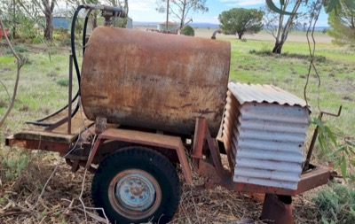
Mobile fuel trailer, 1000 L, 12V pump — strong link
$770 ($700 + GST) · Warburn, NSW (30km)
1000 L · towable trailer · 12V electric pump · custom made, used · listed 2 Jun 2026
1000 L towable cart with a 12V pump, 30km away, at under half the price of the Coleambally cart; listed in June, so ring to check it's still there.
Farm Tender · first seen 2026-10-22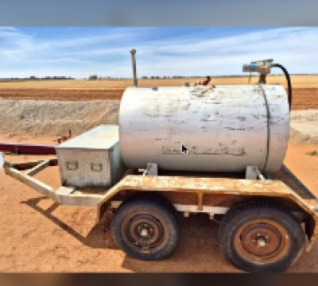
1000 L fuel cart with electric pump and toolbox — strong link
$1,800 (down from $1,980) · Coleambally, NSW (40km)
1000 L · tandem-axle trailer · electric pump · toolbox · used - good, bought but not needed
Tidy tandem 1000 L cart with pump, 40km away; listed 9 weeks, so there may be room on price.
Facebook Marketplace · first seen 2026-10-22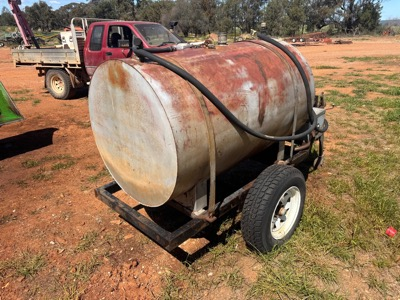
Tow-behind fuel tank, 1000 L, Honda motor pump — strong link
price TBC (no bids yet; opens 5 Nov, timer 9 Nov) · Barellan, NSW (110km)
1000 L, tow-behind · Honda motor pump · used, inspect before bidding · same sale has a 2,200 L overhead diesel tank
Local 1000 L cart with a pump at a clearing sale, likely to go under the $400-$1,980 seen for similar gear.
AuctionsPlus (Elders Griffith) · ends 2026-11-05 · first seen 2026-10-25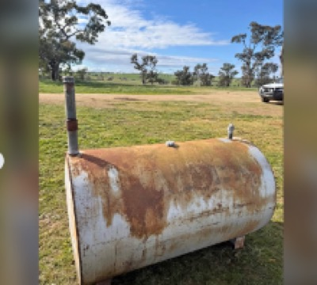
850 L diesel tank — decent link
$400 · Lockhart, NSW (190km)
about 850 L · in diesel use until a month ago · used - good · no pump or stand stated
Cheapest working diesel tank found, in use until last month, but rusty, bare and 190km away.
Facebook Marketplace · first seen 2026-10-22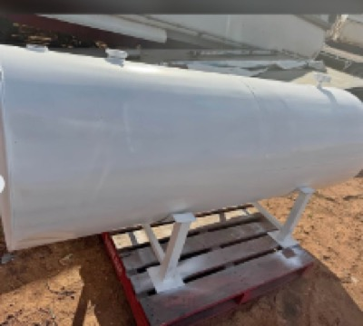
1000 L steel fuel tank on skids — decent link
$800 (ONO) · Griffith, NSW (40km)
1,000 L · petrol or diesel · used - good · no pump or stand stated
Clean-looking 1000 L tank 40km away, but bare: budget for a pump or a stand.
Facebook Marketplace · first seen 2026-10-22
Hunt log
all 35 runs
Prices are what the seller or auction house is asking, before premium, transport or GST unless noted. Verify everything before you commit money.
Nothing here is financial advice. Holdings and opinions are my own; the "agent" sections are written by an automated research skill and may be wrong. Built 2026-10-29 18:39 UTC.